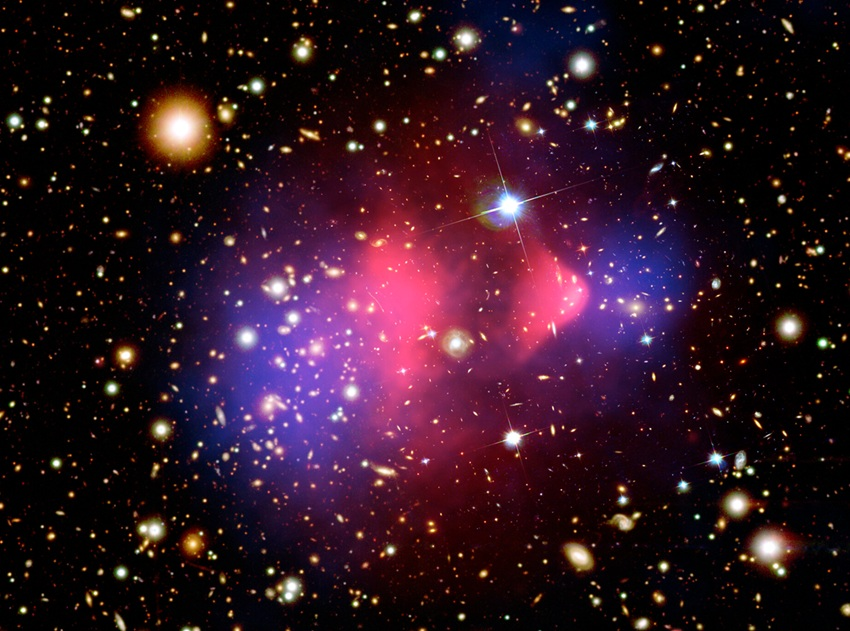

🚧Work in progress!🚧
Disclaimer (on stuff as the target audience or the usage of AI):
This article is divulgative, see a more scientific one here. The audience for the article is STEM passionate non-expert that is eager of getting in touch with basis and practical details of cutting-edge astrophysics research topics. One may wonder: why not a video? this article target is for people like me, who are more confortable in reading, so they can scroll back and forth to easily recollect information, and to easily copy-paste material for personal searches and come back to the text later. Also, I stress I did not use AI (unless for language editing) as I feel AI generated pop-sci posts can often be much less interesting (e.g. an AI would make it too generic and flat and add disproportionately exiting enphasis on things that are not cutting edge) than the one written by someone who currently who currently work on the topic.While most scientists agree on the basics theoretical frameworks that domanites the Universe
(for instance as general relativity, the cosmological principle, the big bang theory),
we still lack a lot of pieceses in the puzzle: for instance precise measurements of the matter density in the universe (we know it has a fractional value between 0.2-0.3 but not much more),
what actually is dark matter (an elementary particle? and if so, how does it interact at a particle level?),
and the time evoluiton of dark energy
(so far mostly rule-of-thumb modeled as a constant negative pressure term in general relativity equations).

On what do we all agree on dark matter? Observations of gravitational lenses of galaxy clusters (they lens even farther away galaxies) can be tighly tied with the total mass of the system, now, we can estimate the mass of the system also by its lumunosity right? if galaxies are made of stars (likewise our sun) we can estimate a total visible mass, which is not even close to the one predicted by gravitational lensing. In fact, it seems the total mass from lensing is ~10 times larger than the visible one. The same happen if we look at the rotation speed of member galaxies and of stars within galaxies. This is easy to prove: likewise our solar system, the further an object from the center, the slower it turns, however, at galaxy scales the objects have all a constant rotating velocity.. so we can infer the total mass of the cluster, and belive it or not, is compatible with the very high mass inferred by lensing. This is one of the reasons why astrophysicsts belive in dark matter, that is a form of invisible matter One may wonder, what if general relativity is wrong and gravity accelerates differently? then, after merger, the two mergin systems (made both of gas and dark matter) would have a center of gravity centered on the visible component. On the other hand, if dark matter is made of collisionless particles, they would fly though the merger and leave the gas behind: this is a strong imprint of dark matter being made of particles instead of gravity modification. This is actually very well visible in the so called bullet cluster (figure on the left), where two after-merger galaxies have that the two gas component (red) staied very close to the center between the two because gas friction they stayed kind of glued together; on the other hand the center of mass is near the blue component, far away, showing that there was some kind of matter that, before merger was tight in the center of each galaxy and after merger it "run away" collisionlessly.
To answer these questions one important probe is the distribution of galaxies in the sky: galaxies (10-20kpc in radius) that we see in the sky are not distributed randomly but are often clustered together and bound together by Mpc scale dark matter haloes. We refer to these largest gravitationally bounded structures as galaxy clusters. To interpret their spatial distribution we use (semi-)analitic, and numerical simulations of gas and dark matter patches that cover portion of the universe closed to the size of the whole observable Universe. As we will learn better below, galaxy clusters emit in various wavelength, apart from the obvious optical emission (a galaxy is made of stars who emit similar to our sun), the emit in X-ray as hydrogen is still the most common element in our Universe and it is the intra-cluster medium of galaxy cluster, as it falls in the center of the potential well, gas friction emits in X due to bhremstralung.